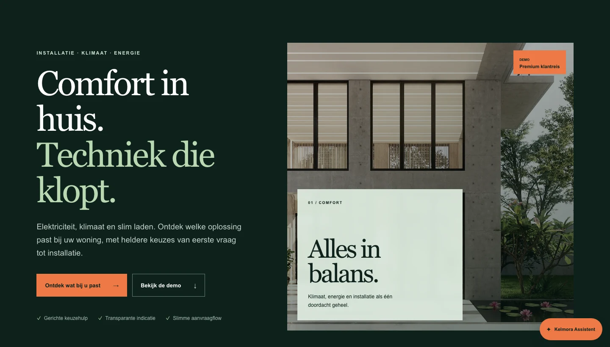
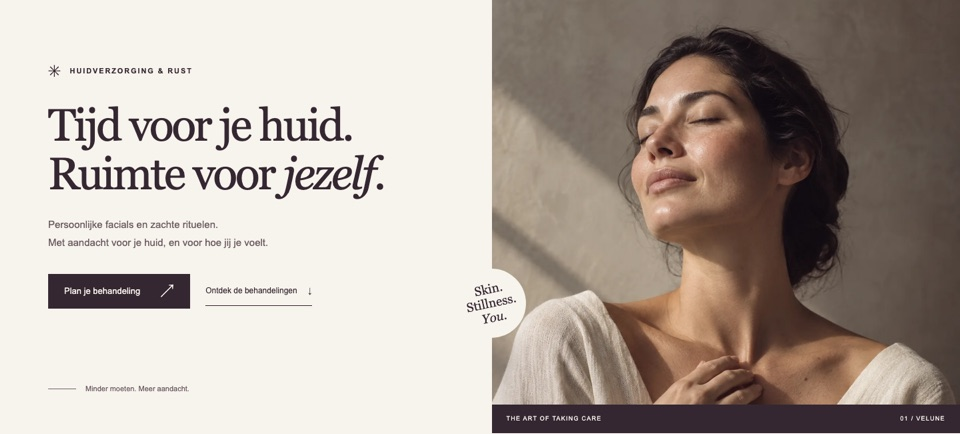
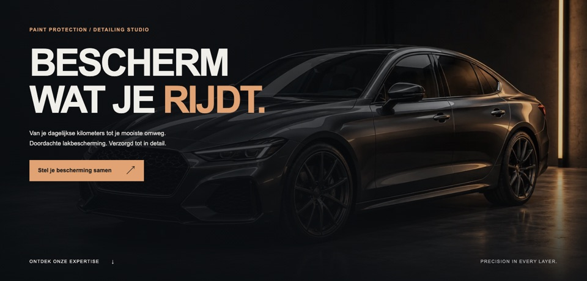

01 / Techniek & vakbedrijven Demo
Kelmora Techniek
Een breed dienstenaanbod, helder geordend. Van een eerste vraag naar de juiste vakkennis.
Webdesign voor zelfstandigen en kleine bedrijven
Ik ontwerp en bouw websites met een eigen uitstraling, een helder aanbod en een logische weg naar contact.
Lorenz LK Webdesign Oud-Turnhout

Kelmora — fictief demoproject
Verschillende diensten, één helder vertrekpunt.
01 / EEN EIGEN UITSTRALING
Van techniek tot verzorging en automotive. Drie fictieve demo’s laten zien hoe een website het karakter van een zaak kan dragen.
01 / Techniek & vakbedrijven Demo
Een breed dienstenaanbod, helder geordend. Van een eerste vraag naar de juiste vakkennis.

02 / Beauty & wellness Demo
Rust en aandacht, ook online. Een persoonlijke route naar een passende behandeling.

03 / Premium automotive Demo
Precisie en karakter. Behandeling en bescherming krijgen een duidelijke plek.
02 / KORTE LIJNEN, HELDERE AFSPRAKEN
Rechtstreeks met Lorenz: richting bepalen, ontwerpen & bouwen, dan opleveren. Met afgesproken feedbackmomenten.
Een gemiddeld project duurt circa 2–4 weken, afhankelijk van omvang, inhoud, feedback en planning.
Bekijk aanpak & prijzenEEN RICHTING VOOR JE INVESTERING
Richtprijzen inclusief 21% btw, met de prijs exclusief btw eronder. Geen vaste pakketten. De inhoud en functionaliteit bepalen je persoonlijke offerte.
Ook na oplevering. Optioneel:LK Hosting €30,13/maand incl. 21% btw€24,90/maand excl. btwLK Care inclusief Hosting €71,39/maand incl. 21% btw€59,00/maand excl. btw
Wat is inbegrepen?03 / LORENZ, AANGENAAM
Ik ben Lorenz, webdesigner in Oud-Turnhout. Je spreekt rechtstreeks met de persoon die je website maakt.
Vertel me over je zaak. Samen bekijken we wat past.
Bespreek je website